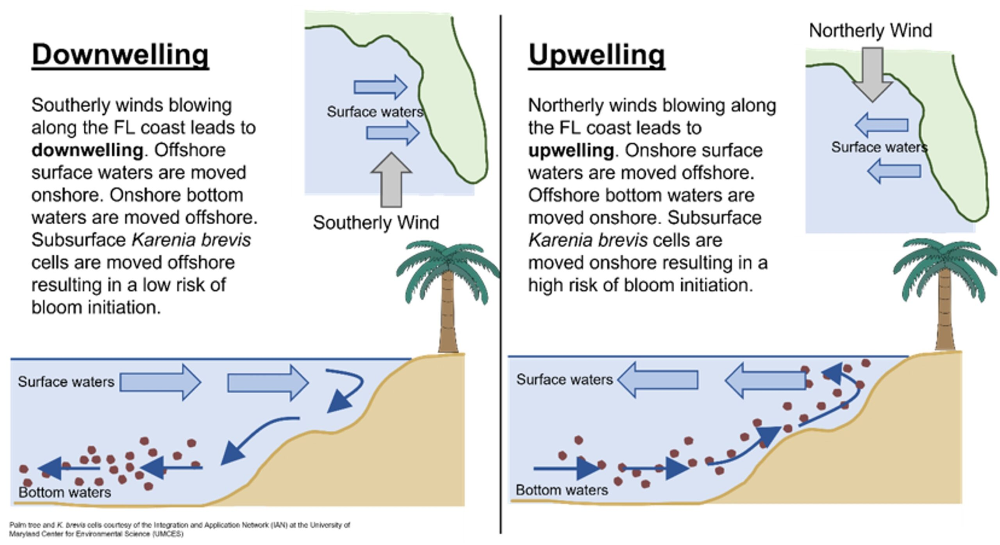

R image

Figure 1: A plot with 538 layout theme and color blind palette.
Figure 1: A plot with 538 layout theme and color blind palette.
(Describe the problem.)
anoxia
auxotrophic
benthic
demersal
eutrophication
heterotrophic
hypoxia
statification
DO - diluted oxygen
HABSOS - Harmful Algal BloomS Observing System
IOOS - Integrated Ocean Observing System
NSP - neurotoxic shellfish poisoning
WOD - World Ocean Database
“A harmful algal bloom (HAB), or excessive algae growth, is an algal bloom that causes negative impacts to other organisms by production of natural algae-produced toxins, mechanical damage to other organisms, or by other means.”
The US Environmental Protection Agency (EPA) defined an HAB in 2008 as “potentially toxic (auxotrophic, heterotrophic) species and high-biomass producers that can cause hypoxia and anoxia and indiscriminate mortalities of marine life after reaching dense concentrations, whether or not toxins are produced”.
“As algal biomass accumulates in the surface water during a HAB, the sinking and decomposition of dead cells near the bottom increases respiratory demand and depletes dissolved oxygen, a condition generally referred to as hypoxia.”[1]
HABs are sometimes defined as only those algal blooms that produce toxins, and sometimes as any algal bloom that can result in severely lower oxygen levels in natural waters, killing organisms in marine or fresh waters.
A bloom’s duration can last from a few days to many months.
Upon the expiration of the bloom, microbes consume the dead algae resulting in an oxygen deprived “dead-zone”.
Any fish or plants within the dead-zone will die due to asphyxiation.
When a bloom occurs within a marine environment, an indicator is the presence of dead fish floating on the water. These events are referred to as “red tides”.
The origin or cause of a HAB can be difficult to pinpoint though high levels of nutrients, like nitrogen and phosphate, high water temperatures, and lack of water circulation are contributing factors.
In the NOAA data, the HAB is identified as Karenia Brevis.
“Karenia” is a genus that consists of unicellular, photosynthetic, planktonic organisms found in marine environments. As of 2012, the genus consisted of 12 species. “They are best known for their dense toxic algal blooms and red tides that cause considerable ecological and economical damage; some Karenia species cause severe animal mortality. Karenia brevis is known to cause respiratory distress and neurotoxic shellfish poisoning (NSP) in humans.”
“The toxin-producing dinoflagellate Karenia brevis is the main causative species for HABs occurring annually on the West Florida Shelf.”[1]
“The West Florida Shelf is a relatively wide and shallow continental shelf with ample wind energy to mix the water column for much of the year (Yang and Weisberg, 1999). However, during the summer and early fall, warm sea surface temperatures and increased runoff during the Florida wet season leads to increased stratification, and in conjunction with HABs may contribute to an increased likelihood of hypoxia on the West Florida Shelf.” [1]
The National Centers for Coastal Ocean Science (NCCOS) offers a algal bloom forecast. On the website, it describes the process. “During the early bloom period (typically each fall), Karenia brevis cells—which persist in the bottom waters offshore—can be moved onshore to the Southwest Florida coast by a process known as coastal upwelling. The graphics below demonstrate this process. Once near the coast, Karenia brevis cells can quickly reach levels that create a harmful algal bloom (HAB).”

“Consumption of shellfish containing elevated PbTx concentrations causes neurotoxic shellfish poisoning (NSP). Unlike many other marine algal toxins, brevetoxins become aerosolized when K. brevis cells break open in high turbulence (especially nearshore) and are subsequently transported onshore by winds.”[2]
“These aerosolized toxins cause respiratory irritation and pose a significant risk to beachgoers with chronic respiratory illnesses such as asthma, and have been measured at distances greater than 1.5 km from the shore during blooms.” [2]
Severe K. brevis blooms are associated with the mortality of manatee, bottlenose dolphins, sea turtles and fish. [2]
“Fish kills in the Gulf of Mexico that could be attributed to K. brevis were identified as long ago as 1528.”[2]
“Reports of HABs affecting the coastal waters of the Gulf of Mexico from Florida to Texas date back to the arrival of Europeans with the first well documented bloom in 1844.”[1]
A Mr. Benjamin Curry of Manatee County, “one of the oldest residents on the Florida coast” confirmed “that as far back as 1844 a widespread destruction of all sorts of saltwater animal life occurred, apparently due to causes precisely similar to those which produced the lately noticed desolation.”[3]
In 1875, red tides were “were first linked to reports of human respiratory irritation.”[1]
“K. brevis was identified as the cause of “red tides” off the Southwest coast of Florida in the 1940s.”[2]
As a result, regular water sampling of bloom events began in late 1953 (Florida’s FWC-FWRI’s HAB Monitoring Database, myfwc.com/research/redtide/ monitoring/database/).[2]
Prior to 1953, Feinstein is credited with compiling the historical record of red tides from 1844 to 1953, through sources like newspaper articles, interviews, and logs.[2] The work is revolutionary and inspirational in that it was one of the first attempts to assess the place, seasonality, and duration of red tides on Florida’s Gulf Coast.
Feinstein notes that “many incidences of Red Tide, especially before 1947, were probably not recorded.”[3]
However, “sampling was still intermittent and often event-driven until a severe event occurred in the mid-1990s (1994–1997). From 1994 onwards, blooms were sampled more systematically by the state of Florida, supplemented by various research projects.”[2]
HABSOS data. According to the HABASOS website,
The Harmful Algal BloomS Observing System (HABSOS) began as a pilot project in 2001 to focus on recent Karenia brevis blooms in the Gulf of Mexico. This project identified a need for a harmful algal bloom observing network. Many individuals from Gulf of Mexico state agencies and universities, US Environmental Protection Agency, and NOAA National Coastal Data Development Center (NCDDC) participated in this project. This product developed a strong partnership between Gulf of Mexico partners and NOAA National Centers for Environmental Information (formerly NCDDC).
HABSOS evolved into a database of HAB observations and associated environmental observations submitted by the partners who collect these data. These data are updated annually and made publicly available in the NCEI archive and via the interactive map viewer. NCEI’s HABSOS provides a research quality HAB dataset and HAB observations in near-real time.
(What data did you use, where did you get it?)
“Historical HAB sampling in Florida has been collected opportunistically, limiting the use of the data for robust statistical analyses (Christman and Young 2006), but more recently there have been efforts to conduct routine monitoring.”[1]
Turley and others used the HAB sampling data to “identify extreme events, examine the geographic extent, and determine approximate temporal limits of an event.”[1]
“This, however, assumes that major events don’t go completely undetected, which is not likely for nearshore events but could occur in the case of offshore blooms.”[1]
This blog post was made possible thanks to:
The views, analysis and conclusions presented within this paper represent the author’s alone and not of any other person, organization or government entity. While I have made every reasonable effort to ensure that the information in this article was correct, it will nonetheless contain errors, inaccuracies and inconsistencies. It is a working paper subject to revision without notice as additional information becomes available. Any liability is disclaimed as to any party for any loss, damage, or disruption caused by errors or omissions, whether such errors or omissions result from negligence, accident, or any other cause. The author(s) received no financial support for the research, authorship, and/or publication of this article.
─ Session info ───────────────────────────────────────────────────────────────────────────────────────────────────────
setting value
version R version 4.3.2 (2023-10-31)
os macOS Monterey 12.5.1
system x86_64, darwin20
ui X11
language (EN)
collate en_US.UTF-8
ctype en_US.UTF-8
tz America/New_York
date 2024-04-24
pandoc 3.1.1 @ /Applications/RStudio.app/Contents/Resources/app/quarto/bin/tools/ (via rmarkdown)
─ Packages ───────────────────────────────────────────────────────────────────────────────────────────────────────────
package * version date (UTC) lib source
blogdown * 1.19 2024-02-01 [1] CRAN (R 4.3.2)
bookdown 0.39 2024-04-15 [1] CRAN (R 4.3.2)
bslib 0.7.0 2024-03-29 [1] CRAN (R 4.3.2)
cachem 1.0.8 2023-05-01 [1] CRAN (R 4.3.0)
cli 3.6.2 2023-12-11 [1] CRAN (R 4.3.0)
codetools 0.2-19 2023-02-01 [1] CRAN (R 4.3.2)
colorspace 2.1-0 2023-01-23 [1] CRAN (R 4.3.0)
devtools * 2.4.5 2022-10-11 [1] CRAN (R 4.3.0)
digest 0.6.35 2024-03-11 [1] CRAN (R 4.3.2)
dplyr 1.1.4 2023-11-17 [1] CRAN (R 4.3.0)
ellipsis 0.3.2 2021-04-29 [1] CRAN (R 4.3.0)
evaluate 0.23 2023-11-01 [1] CRAN (R 4.3.0)
fansi 1.0.6 2023-12-08 [1] CRAN (R 4.3.0)
farver 2.1.1 2022-07-06 [1] CRAN (R 4.3.0)
fastmap 1.1.1 2023-02-24 [1] CRAN (R 4.3.0)
fs 1.6.3 2023-07-20 [1] CRAN (R 4.3.0)
generics 0.1.3 2022-07-05 [1] CRAN (R 4.3.0)
ggplot2 * 3.5.0 2024-02-23 [1] CRAN (R 4.3.2)
ggthemes * 5.1.0 2024-02-10 [1] CRAN (R 4.3.2)
glue 1.7.0 2024-01-09 [1] CRAN (R 4.3.0)
gtable 0.3.4 2023-08-21 [1] CRAN (R 4.3.0)
highr 0.10 2022-12-22 [1] CRAN (R 4.3.0)
htmltools 0.5.8.1 2024-04-04 [1] CRAN (R 4.3.2)
htmlwidgets 1.6.4 2023-12-06 [1] CRAN (R 4.3.0)
httpuv 1.6.14 2024-01-26 [1] CRAN (R 4.3.2)
jquerylib 0.1.4 2021-04-26 [1] CRAN (R 4.3.0)
jsonlite 1.8.8 2023-12-04 [1] CRAN (R 4.3.0)
knitr 1.45 2023-10-30 [1] CRAN (R 4.3.0)
labeling 0.4.3 2023-08-29 [1] CRAN (R 4.3.0)
later 1.3.2 2023-12-06 [1] CRAN (R 4.3.0)
lifecycle 1.0.4 2023-11-07 [1] CRAN (R 4.3.0)
magrittr 2.0.3 2022-03-30 [1] CRAN (R 4.3.0)
memoise 2.0.1 2021-11-26 [1] CRAN (R 4.3.0)
mime 0.12 2021-09-28 [1] CRAN (R 4.3.0)
miniUI 0.1.1.1 2018-05-18 [1] CRAN (R 4.3.0)
munsell 0.5.1 2024-04-01 [1] CRAN (R 4.3.2)
pillar 1.9.0 2023-03-22 [1] CRAN (R 4.3.0)
pkgbuild 1.4.3 2023-12-10 [1] CRAN (R 4.3.0)
pkgconfig 2.0.3 2019-09-22 [1] CRAN (R 4.3.0)
pkgload 1.3.4 2024-01-16 [1] CRAN (R 4.3.0)
profvis 0.3.8 2023-05-02 [1] CRAN (R 4.3.0)
promises 1.2.1 2023-08-10 [1] CRAN (R 4.3.0)
purrr 1.0.2 2023-08-10 [1] CRAN (R 4.3.0)
R6 2.5.1 2021-08-19 [1] CRAN (R 4.3.0)
Rcpp 1.0.12 2024-01-09 [1] CRAN (R 4.3.0)
remotes 2.4.2.1 2023-07-18 [1] CRAN (R 4.3.0)
rlang 1.1.3 2024-01-10 [1] CRAN (R 4.3.0)
rmarkdown 2.26 2024-03-05 [1] CRAN (R 4.3.2)
rstudioapi 0.15.0 2023-07-07 [1] CRAN (R 4.3.0)
sass 0.4.9 2024-03-15 [1] CRAN (R 4.3.2)
scales 1.3.0 2023-11-28 [1] CRAN (R 4.3.0)
sessioninfo 1.2.2 2021-12-06 [1] CRAN (R 4.3.0)
shiny 1.8.0 2023-11-17 [1] CRAN (R 4.3.0)
stringi 1.8.3 2023-12-11 [1] CRAN (R 4.3.0)
stringr 1.5.1 2023-11-14 [1] CRAN (R 4.3.0)
tibble 3.2.1 2023-03-20 [1] CRAN (R 4.3.0)
tidyselect 1.2.0 2022-10-10 [1] CRAN (R 4.3.0)
urlchecker 1.0.1 2021-11-30 [1] CRAN (R 4.3.0)
usethis * 2.2.3 2024-02-19 [1] CRAN (R 4.3.2)
utf8 1.2.4 2023-10-22 [1] CRAN (R 4.3.0)
vctrs 0.6.5 2023-12-01 [1] CRAN (R 4.3.0)
withr 3.0.0 2024-01-16 [1] CRAN (R 4.3.0)
xfun 0.43 2024-03-25 [1] CRAN (R 4.3.2)
xtable 1.8-4 2019-04-21 [1] CRAN (R 4.3.0)
yaml 2.3.8 2023-12-11 [1] CRAN (R 4.3.0)
[1] /Library/Frameworks/R.framework/Versions/4.3-x86_64/Resources/library
──────────────────────────────────────────────────────────────────────────────────────────────────────────────────────